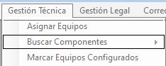

- Acceso al sistema
- Solicitud de Equipos
- Solicitud de Retiro de Equipo
- Asignacion de equipos
- Busqueda de componentes
- Marcar Equipos como configurados
- Emitir Comodato
- Ver Equipos Entregados
- Ver Equipos a Retirar
- Asignar Fecha a Retiro de equipos
- Controlar Devoluciones
- Ver Avisos de Contaduría
- Cambio de Idioma
Acceso al Sistema
Para acceder al sistema es necesario tener registrado un usuario activo. \n Con el sistema abierto se debe hacer click en el botón superior izquierdo 'Usuario'.
Posteriormente se debe hacer click en Iniciar Sesion.

Vera que aparece una ventana, llamada Login
Deberá ingresar su usuario y contraseña para acceder al sistema.

Listo, se ha iniciado sesion.
Solicitud de Equipos
Utilice esta funcón para solicitar equipo para algun empleado.
En el menu "Gestion de Pedidos", haga click sobre "Solicitar Equipo"

Se desplegará una ventana con el listado de empleados
Luego de haber seleccionado un equipo, haga click en el boton "Solicitar". Aparecera un cartel que indica que la operacion se ha completado.
Solicitud de Retiro de Equipos
Para solicitar el retiro de un equipo, seleccione la opción "Solicitar Retiro de Equipo" del menu "Gestión de pedidos"

Se abrira un formulario con los empleados que tienen un equipo en su domicilio.
Seleccione el empleado e ingrese el motivo del retiro del equipo, posteriormente haga click en "Solicitar"

Como podrá ver, se genera la orden de retiro para ser entregada al personal de Correo Interno.
Imprima dicha orden haciendo click en el boton de impresion del documento.
Asignacion de Equipos
Haga click en el menu Gestión Técnica y luego en la opción "Buscar Componentes"

En el formulario que se abre, seleccione la solicitud a la que le desea agregar el equipo.
Haciendo click en "Buscar Equipo" aparecera un equipo en el espacio en blanco que es el equipo mas adecuado para el prestamo

Al hacer click en "Asignar" se asignara el equipo a la persona y la solicitud ya no aparecera en el listado.
Busqueda de componentes
Al no encontrar un equipo adecuado, puede optar por realizar la busqueda de los componentes adecuados para armar un equipo.
Esta función del sistema genera un remito de retiro de componentes del deposito
Haga click en "Gestion Tecnica" del menu principal y luego en "Buscar Componentes"
En el formulario que se presenta, seleccione una de las solicitudes y luego haga click en "Buscar Componentes"

Se generara un remito que usted podra imprimir, o guardar para luego ir a retirar los componentes a deposito.